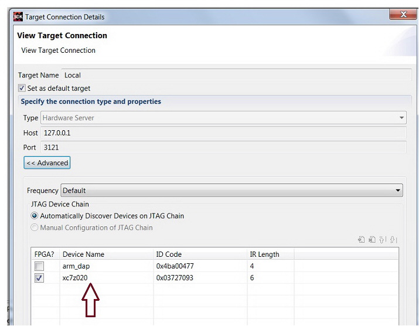
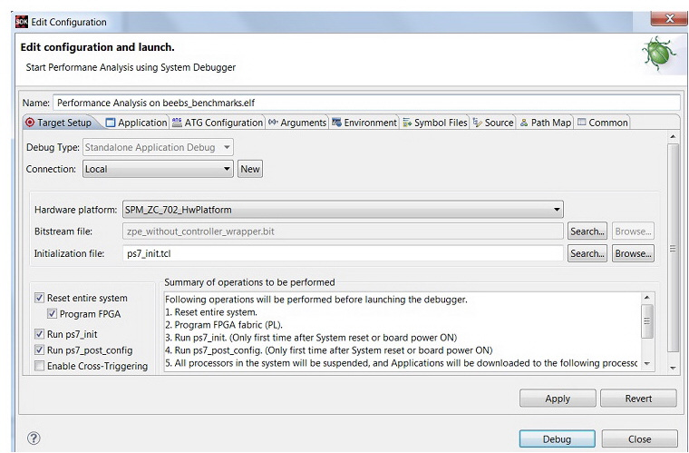

System Performance Modeling Using the SDK Predefined Design
The predefined flow provided with SDK uses the fixed design, and comes with a fixed bitstream. In this design, there are five AXI Traffic Generators (ATGs), with one connected to each of the four High Performance ports (HP0-3) and one connected to the Accelerator Coherency Port (ACP). The ATGs are set up and controlled using one of the General Purpose (GP) ports. In addition, an AXI Performance Monitor (APM) is included in order to monitor the AXI traffic on the HP0-3 and ACP ports.
Establishing a Target Connection
To establish a target connection, you can use either the local board or the remote board.
Establishing a Target Connection Using a Local Board
By default, the local target connection is selected by default in the Target Connections window. You can confirm connections to the local board by checking the local connection as shown in the following figure.

Creating the System Performance Modeling Project
The following figure shows the Edit Configuration dialog box for a local connection. To start the SPM with the default traffic configuration, click Debug. The default traffic section is explained in Selecting an ATG Traffic Configuration
It first programs the FPGA and then starts the SPM.

Selecting an ATG Traffic Configuration
To select a traffic configuration:
- In the Project Explorer, right-click the hardware platform and select Debug As > Debug Configurations.
- Under Performance Analysis , select Performance Analysis on < filename >.elf.
- You can use the ATG Configuration tab to define multiple traffic configurations and select the traffic to be used for the current run. The following figure shows the traffic that is defined in the Default configuration.
The port location is taken from the Hardware handoff file. If no ATG was configured in the design, the ATG Configuration tab is empty.

- You can use the ATG Configuration dialog box to add and edit configurations.
- To add a configuration to the list of configurations, click the + button.
- To edit a configuration, select the Configuration: drop-down list to choose the configuration that you want to edit.
- For ease of defining an ATG configuration, you can create Configuration Templates. These templates are saved for the user workspace and can be used across the Projects for ATG traffic definitions. To create a template, do the following:
The newly created template is assigned a Template ID with the pattern of "UserDef_*" by default. You can change the ID and also define the rest of the fields.
You can use these defined templates to define an ATG configuration. To delete a Configuration Template, select it and click the X button.